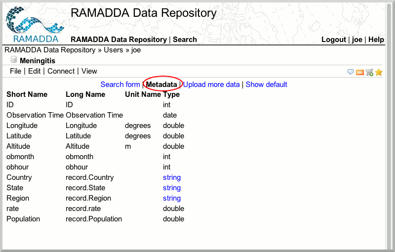

More with Point Data
In this section, we will be looking at more possibilities for point data exploration with RAMADDA.
- Go to your RAMADDA Instance and navigate to your "Users" folder.
- Create a new entry by clicking the plus sign. You will have a panoply of choices. Select "Point Database".
- Upload the file
/data/idv/point/meningitisrates.csv
- Observe what fields are available by clicking the "Metadata" tab.

- Now that the meningitis data is in RAMADDA, you can use RAMADDA's powerful search and subsetting capability. Click on the "Search form" link, "Show Map", select the "Results, Format" as "Html". Press the "Search" button.
- Experiment with other search parameters.